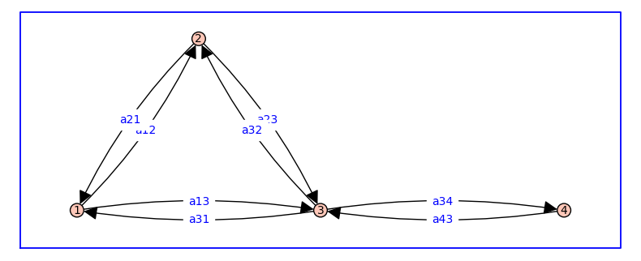
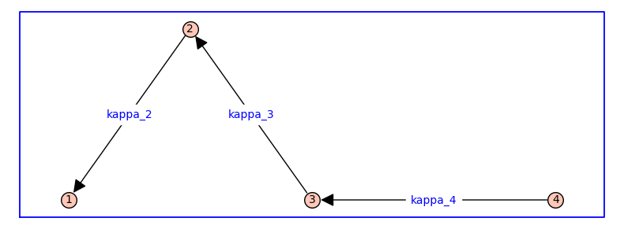

Non-equilibrium steady states#
The equilibrium formulation assumes detailed balance. However, when the state-transition diagram of a receptor model includes cycles, the steady-state probability distribution may not satisfy detailed balance.
Let us consider again the following state-transition diagram.
var('a12, a21, a13, a31, a23, a32, a34, a43')
d = {1: {2:a12, 3:a13}, 2: {1:a21, 3:a23}, 3: {2:a32, 1:a31, 4:a34}, 4: {3:a43}};
G = DiGraph(d,weighted=True)
vertex_positions = {1: (0, 0), 2: (1, 1.41), 3: (2, 0), 4: (4,0)}
G.plot(figsize=8,edge_labels=True,pos=vertex_positions,graph_border=True)

Generator matrix#
The generator matrix \(Q\) for the Markov chain associated to \(G\) can be constructed from the weighted adjacency matrix \(A\), given by
A = matrix(SR,G.weighted_adjacency_matrix())
print(A)
print(A.rank())
type(A)
[ 0 a12 a13 0]
[a21 0 a23 0]
[a31 a32 0 a34]
[ 0 0 a43 0]
4
<class 'sage.matrix.matrix_symbolic_sparse.Matrix_symbolic_sparse'>
Warning
I’m not sure why the above code doesn’t work. I changed it to explicitly use SR.
A = matrix(SR,[[0,a12,a13,0],[a21,0,a23,0],[a31,a32,0,a34],[0,0,a43,0]])
print(A)
print(A.rank())
type(A)
[ 0 a12 a13 0]
[a21 0 a23 0]
[a31 a32 0 a34]
[ 0 0 a43 0]
4
<class 'sage.matrix.matrix_symbolic_dense.Matrix_symbolic_dense'>
var('a12, a21, a13, a31, a23, a32, a34, a43')
d = {1: {2:a12, 3:a13}, 2: {1:a21, 3:a23}, 3: {2:a32, 1:a31, 4:a34}, 4: {3:a43}};
G = DiGraph(d,weighted=True)
Q = A - diagonal_matrix(sum(A.T))
print(Q)
print('The rank of Q is',Q.rank())
type(Q)
[ -a12 - a13 a12 a13 0]
[ a21 -a21 - a23 a23 0]
[ a31 a32 -a31 - a32 - a34 a34]
[ 0 0 a43 -a43]
The rank of Q is 3
<class 'sage.matrix.matrix_symbolic_dense.Matrix_symbolic_dense'>
Another way to write this is \(Q = A - \text{diag}(A\be)\) where \(\be\) is a commensurate column vector of 1s. The following code confirms that \(Q \be = \bzero\), i.e., each row of \(Q\) sums to zero.
e = matrix([1,1,1,1]).T
print(Q*e)
[0]
[0]
[0]
[0]
The matrix \(Q\) is referred to as the generator matrix for the Markov chain because the probability distribution \(\bpit\) solves \(d\bpit/dt = \bpit Q\).
Note
The probability distribution \(\bpit\) is a row vector.
The steady-state probability distribution solves \(\bpit Q = \bzero\) subject to \(\bpit \be = 1\). This expression is equivalent to \(\sum_i \pi_i = 1\) (conservation of probability).
Symbolic solution#
We will symbolically solve \(\bpit Q = \bzero\) subject to \(\bpit \be = 1\).
To begin, we will unpack the four linear equations of \(\bpit Q = \bzero\), which is compact notation for four linear equations.
var('p1 p2 p3 p4')
p = vector([p1, p2, p3, p4])
pQ = p*Q
eq =[]
for lhs in pQ:
print(lhs == 0)
eq.append(lhs == 0)
-(a12 + a13)*p1 + a21*p2 + a31*p3 == 0
a12*p1 - (a21 + a23)*p2 + a32*p3 == 0
a13*p1 + a23*p2 - (a31 + a32 + a34)*p3 + a43*p4 == 0
a34*p3 - a43*p4 == 0
Note that \(Q\) is rank 3, in spite of being \(4\times 4\).
print(Q.rank())
3
This means that the fourth equation (a34*p3 - a43*p4 == 0) is superfluous because \(Q\) is rank 3, in spite of being \(4\times 4\). We will replace this equation by the condition p1+p2+p3+p4 == 1.
eq[-1] = p1+p2+p3+p4 == 1
for q in eq:
print(q)
-(a12 + a13)*p1 + a21*p2 + a31*p3 == 0
a12*p1 - (a21 + a23)*p2 + a32*p3 == 0
a13*p1 + a23*p2 - (a31 + a32 + a34)*p3 + a43*p4 == 0
p1 + p2 + p3 + p4 == 1
This system of four linear equations can now be solved to obtain the steady-state probability distribution.
z = solve(eq,list(p))
for i in range(4):
f = z[0][i].rhs()
print('p%s' % (i+1),'=',f.expand().factor())
p1 = (a21*a31 + a23*a31 + a21*a32)*a43/(a13*a21*a34 + a12*a23*a34 + a13*a23*a34 + a13*a21*a43 + a12*a23*a43 + a13*a23*a43 + a12*a31*a43 + a21*a31*a43 + a23*a31*a43 + a12*a32*a43 + a13*a32*a43 + a21*a32*a43)
p2 = (a12*a31 + a12*a32 + a13*a32)*a43/(a13*a21*a34 + a12*a23*a34 + a13*a23*a34 + a13*a21*a43 + a12*a23*a43 + a13*a23*a43 + a12*a31*a43 + a21*a31*a43 + a23*a31*a43 + a12*a32*a43 + a13*a32*a43 + a21*a32*a43)
p3 = (a13*a21 + a12*a23 + a13*a23)*a43/(a13*a21*a34 + a12*a23*a34 + a13*a23*a34 + a13*a21*a43 + a12*a23*a43 + a13*a23*a43 + a12*a31*a43 + a21*a31*a43 + a23*a31*a43 + a12*a32*a43 + a13*a32*a43 + a21*a32*a43)
p4 = (a13*a21 + a12*a23 + a13*a23)*a34/(a13*a21*a34 + a12*a23*a34 + a13*a23*a34 + a13*a21*a43 + a12*a23*a43 + a13*a23*a43 + a12*a31*a43 + a21*a31*a43 + a23*a31*a43 + a12*a32*a43 + a13*a32*a43 + a21*a32*a43)
This solution can be written more compactly as follows.
where
This probability distribution is a non-equilibrium steady state. To see this, check to see if the distribution satisfies detailed balance, i.e., \(a_{ij} \pi_i = a_{ji} \pi_j\). Using the note above, we see that detailed balance implies \(a_{ij} z_i = a_{ji} z_j\), but \(a_{01} z_0 \neq a_{10} z_1\).
Komolgorov’s criterion and equilibrium#
If the product of rate constants around the cycle is the same in both directions, i.e., a12*a23*a31=a13*a32*a21 Komolgorov’s criterion is satisfied. In this case, the steady-state probability distribution is guaranteed to satisfy detailed balance. The code below usings this condition to repace a12 by a13*a32*a21/(a23*a31).
The equilibrium steady-state probability distribution assuming the Komolgorov condition is
Q = Q.subs(a31=a13*a32*a21/(a12*a23))
mysolve(p,Q)
p1 = a21*a32*a43/(a12*a23*a34 + a12*a23*a43 + a12*a32*a43 + a21*a32*a43)
p2 = a12*a32*a43/(a12*a23*a34 + a12*a23*a43 + a12*a32*a43 + a21*a32*a43)
p3 = a12*a23*a43/(a12*a23*a34 + a12*a23*a43 + a12*a32*a43 + a21*a32*a43)
p4 = a12*a23*a34/(a12*a23*a34 + a12*a23*a43 + a12*a32*a43 + a21*a32*a43)
which can be written more compactly using () and
As required, this distribution satisfies detailed balance, i.e., \(a_{ij} \pi_i = a_{ji} \pi_j\).
Detailed balance implies that the steady-state probability distribution can be written in terms of equilibrium constants (as opposed to rate constants). Define \(\kappa_{j}=a_{ij}/a{ji}\) for \(i < j\) whenever vertex \(i\) and \(j\) are adjacent.
Dividing the numerator and denominator of each \(\pi_i\) by \(a_{12}a_{23}a_{34}\) yields \(z_1 = 1\), \(z_2 = \kappa_{2}\), \(z_3 = \kappa_{2}\kappa_{3}\), and \(z_4 = \kappa_{2} \kappa_{3} \kappa_{4}\).
In the notation of the equilibrium formulation, this corresponds to the spanning tree
var('kappa_2, kappa_3, kappa_4')
d = {2: {1:kappa_2}, 3: {2:kappa_3}, 4: {3:kappa_4}};
G = DiGraph(d,weighted=True)
vertex_positions = {1: (0, 0), 2: (1, 1.41), 3: (2, 0), 4: (4,0)}
G.plot(figsize=8,edge_labels=True,pos=vertex_positions,graph_border=True)

and its associated relative probabilities: